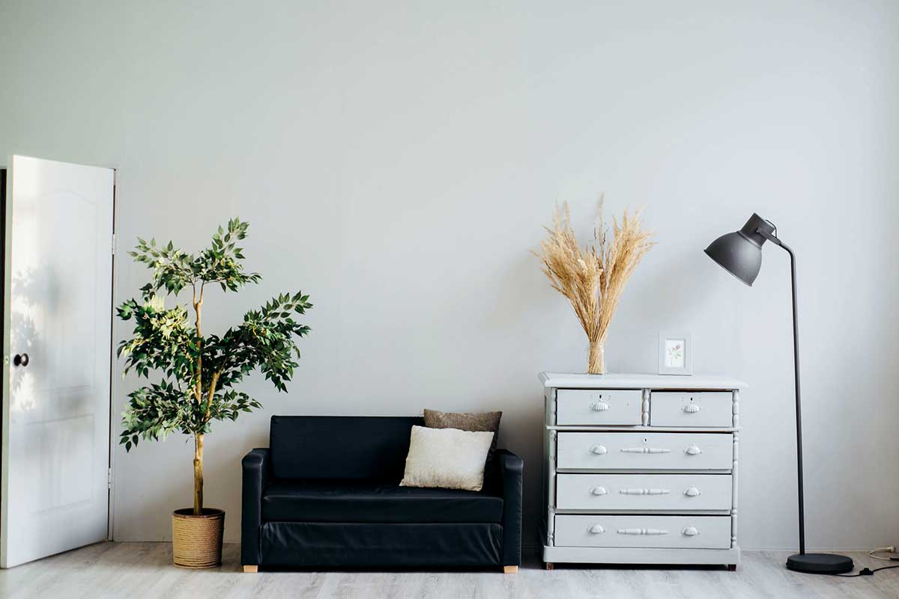

Conciergerie Airbnb à Sierentz : louez votre bien entre Sundgau et Bâle
Bourg commerçant au pied des collines du Sundgau, Sierentz est relié à Bâle et à Mulhouse par le train et l'autoroute. Conciergerie 3F, basée à Saint-Louis, y gère les logements Airbnb des propriétaires de A à Z.
Vous encaissez. Nous gérons tout.

Sierentz, un point de chute pratique entre deux agglomérations
Avec sa gare TER sur la ligne Mulhouse – Bâle, sa sortie sur l'A35 et ses commerces, Sierentz est une base idéale pour des séjours de travail comme de loisirs. Bâle, l'EuroAirport et Mulhouse sont accessibles en une vingtaine de minutes. La demande vient de voyageurs en mission dans les entreprises de la région bâloise et mulhousienne, de frontaliers qui s'installent, de visiteurs des salons de Bâle et de touristes qui explorent l'Alsace du Sud : collines du Sundgau, bords du Rhin et véloroute du Rhin (EuroVelo 15) à proximité.
Une gestion qui fait la différence hors des grandes villes
Dans un bourg comme Sierentz, une annonce soignée et des prix bien calibrés font toute la différence face aux hôtels de Bâle et de Mulhouse. Nous valorisons le calme, le stationnement et la proximité de la gare, ajustons les tarifs aux salons de Bâle et aux vacances des trois pays, et notre équipe basée à Saint-Louis assure les arrivées, le ménage et la maintenance.
Une gestion clé en main à Sierentz

Annonce optimisée
Titre, description et photos qui maximisent les réservations.

Tarification dynamique
Prix ajustés aux salons de Bâle, aux vacances des trois pays et à la saison pour maximiser vos revenus.

Communication 24/7
Réponses rapides, accueil multilingue et gestion complète de la relation voyageurs.

Ménage & linge
Entretien professionnel et linge après chaque séjour.

Maintenance
Notre réseau d'artisans local intervient rapidement.

Référencement
Visibilité optimisée sur Airbnb, Booking et autres plateformes.
Voir notre offre : 18 % HT, tout inclus →
Comment nous fixons vos prix : notre guide du revenue management Airbnb →
Questions fréquentes
Oui : la gare TER, l'accès à l'A35 et la position entre Bâle et Mulhouse attirent voyageurs d'affaires, frontaliers et touristes de l'Alsace du Sud, tout au long de l'année.
Oui. Notre équipe est basée à Saint-Louis, à environ un quart d'heure, et gère sur place les arrivées, le ménage et les petits imprévus.
Cela dépend de la taille, de l'emplacement et de l'équipement de votre bien. Demandez une estimation gratuite : nous vous répondons sous 24h avec une projection personnalisée.
Conciergerie Airbnb dans les Trois Frontières
Nous gérons aussi des logements dans les communes voisines, côté français comme côté allemand.
Estimez gratuitement le potentiel de votre bien à Sierentz
Choisissez votre type de logement pour voir ce qu'il peut rapporter, puis laissez-nous vos coordonnées : estimation personnalisée sous 24h.
Votre logement :
Base : 65 € la nuit et 90 % d'occupation, nos résultats moyens. Avant commission (18 % HT). Estimation indicative : votre estimation précise dépend de l'adresse, de la surface et de l'équipement.
Recevoir mon estimation précise →